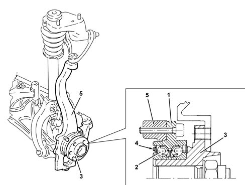

4450C FRONT WHEEL HUBS
- Path
- Descriptions > 44 SUSPENSION AND WHEELS > 4450 WHEELS AND HUBS > 4450C FRONT WHEEL HUBS
- Kind
- system description
- Applies to
- all engines; all production periods
- Interactive page
- https://sloeber94.github.io/elrnDB-aGt/en/#/125000387
Applies to: all engines; all production periods
SPECIFCATIONS
GENERAL VIEW

1 - Outer anchorage flange
2 - Bearing
3 - Hub
4 - Multi-pole magnetic ring
5 - Suspension vertical link
CONSTRUCTION FEATURES
The front wheel hubs consist of an outer attachment flange, a bearing and a wheel attachment hub. The outer flanges are secured by bolts to the suspension vertical links, and also act as an outer cage for the bearing. The wheel hub is in turn installed in the bearing's inner cage. A magnetic multi-pole ring is fitted on the ring of the bearing's inner cage. Its function is to indicate the movement of the wheels to the active sensor of the ABS
Characteristic of working principle 3340 ANTI-LOCK BRAKE SYSTEM (ABS)
.